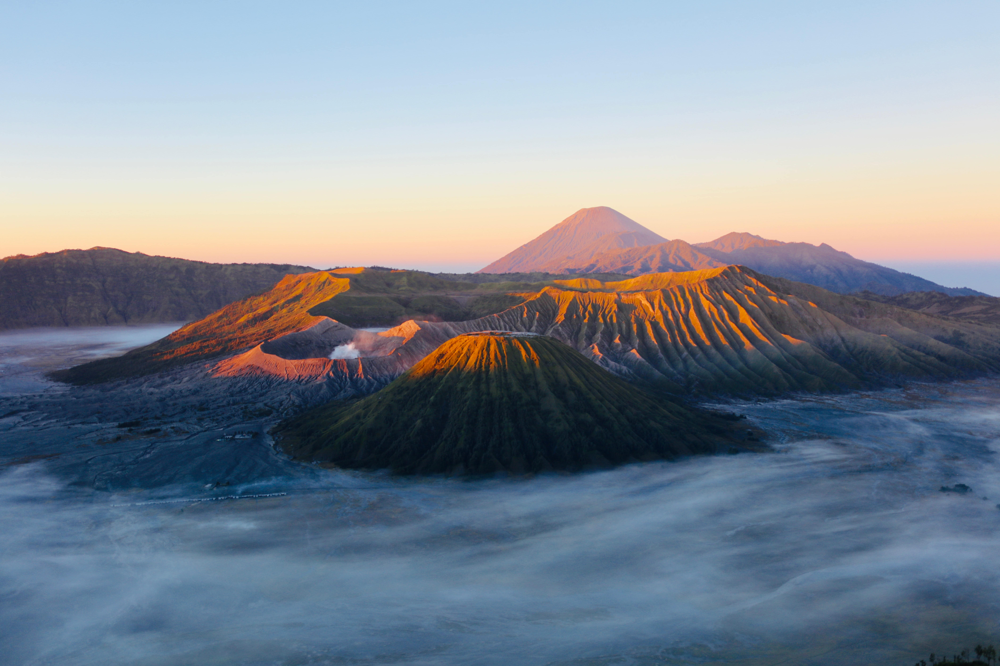

📍Gunung Bromo, Taman Nasional Bromo Tengger Semeru, Desa Ngadisari, Jawa Timur, Indonesia.

Salah satu tempat wisata yang menjadi favorit di Jawa Timur dan selalu banyak dengan pengunjung
adalah wisata Gunung Bromo. Gunung Bromo adalah salah satu tempat wisata yang selalu ramai
wisatawan kunjungi, baik wisatawan domestik maupun wisatawan manca negara. Peristiwa alam
ini menjadi salah satu destinasi yang menarik. Gunung Bromo merupakan tempat wisata yang
sangat kami sarankan untuk dikunjungi ketika ingin melakukan petualangan seru.
Di Bromo anda tidak hanya melihat keindahan matahari terbit di pagi hari namun anda juga bisa
melihat keindahan Kawah Bromo. Kawah Gunung yang merupakan fenomena alam ini menjadi tempat
wisata yang sangat terkenal karena keindahannya. Hal ini terjadi karena Kawah ini berbeda
dengan kawah lainnya. Kawah ini mempunyai bentuk yang sangat menarik dan ini menjadi daya
tarik tersendiri bagi wisatawan.
Untuk mencapai Kawah Bromo itu sangat mudah sekali, anda dapat memulainya setelah melihat matahari
terbit dari puncak penanjakan atau memulainya dari desa Cemoro lawang. Jika dari parkiran Jeep,
menuju kawah ini anda harus melakukan pendakian. Pendakian ini bisa Anda lakukan dengan berjalan
kaki atau juga bisa menggunakan kuda.
Ada banyak sekali kuda yang disewakan untuk pendakian menuju kawah. Pendakian menuju kawah bisa
anda mulai dari lautan pasir. Jika anda ingin melakukan pendakian dengan berjalan kaki, maka
anda akan melakukannnya dengan cukup melelahkan. Namun bila anda tidak ingin merasakan kelelahan,
anda bisa menggunakan sewa kuda untuk menuju puncak. Kuda ini akan membawa anda sampai pada jarak
500 meter sebelum kawah Bromo. Setelah itu perjalanan anda akan melanjutkan dengan berjalan kaki
melewati anak tangga hingga mencapai Puncak Bromo.
Saat anda telah sampai di puncak kawah. Anda akan melihat kawah yang sudah tidak diragukan lagi
keindahannya. Kawah bromo ini menjadi pusat perhatian para pengunjung karena menawarkan destinasi
yang luar biasa. Bau khas belerang sangat menyengat akan menambah suasana keunikan di atas puncak.
Namun anda harus tetap berhati hati, karena tempat ini akan cukup berbahaya. Untuk itu, sebagai
pengunjung yang baik anda harus tetap memperhatikan keselamatan anda.
Platform penyedia informasi seputar cita rasa, pesona dan kekayaan alam indonesia.